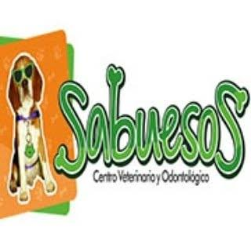

Hoy
- Usa una fotografía (el beagle con gafas) dentro del logo: no se puede bordar, grabar ni imprimir a una tinta, y su calidad depende de la resolución de la foto.
- En el avatar de Instagram y el favicon el perro y el texto se vuelven ilegibles.
- Letra cursiva con contorno: la “S” y la “b” se confunden y cuesta leer “Sabuesos” a distancia o en tamaño pequeño.
- “Centro Veterinario y Odontológico” (logo), “Centro Veterinario” (fachada), “Clínica Veterinaria” (Instagram): tres nombres distintos, y el subtítulo es ilegible en el avatar.